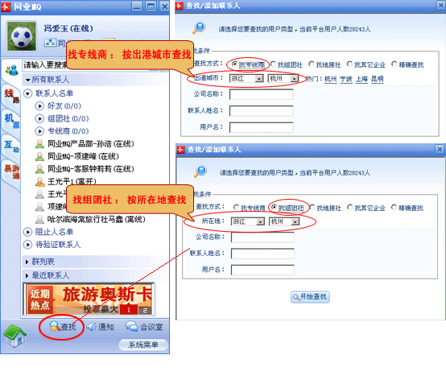
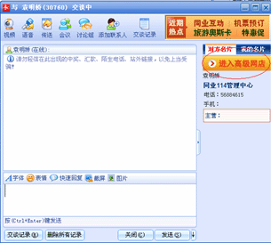
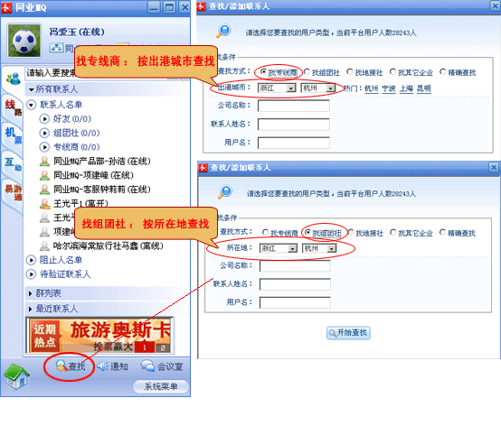
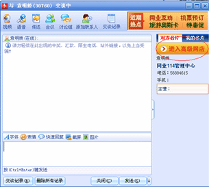

找专线商：按出港城市查找；
找组团社：按所在地查找；
找地接社：按所在地查找；
找其它企业：按所在地查找；
精确查找：按公司名称，联系人姓名，用户名，用户ID号（即MQ自动分配给用户的数字ID） 。
根据查询的结果列表右侧出现 点击
当您与好友交谈的过程中，在聊天窗口右侧，对方企业名片中点击“ ”即打开了好友的网店


| 帮助中心首页 > 同业MQ > MQ即时通讯 |
| MQ即时通讯 |
|
如何添加好友 用户第一次登录MQ时，（同业114内置平台客服，有问题可以向客服提问）联系人中好友是空的，您可以通过查找按钮找到您的联系人
 找专线商：按出港城市查找； 找组团社：按所在地查找； 找地接社：按所在地查找； 找其它企业：按所在地查找； 精确查找：按公司名称，联系人姓名，用户名，用户ID号（即MQ自动分配给用户的数字ID） 。 根据查询的结果列表右侧出现 点击 |
|
通过MQ如何进入网店？如何找到好友的产品？
当您与好友交谈的过程中，在聊天窗口右侧，对方企业名片中点击“ ”即打开了好友的网店  |
|
功能介绍： 同业MQ的操作简单，与通用的即时通讯工具MSN、QQ类似，
|